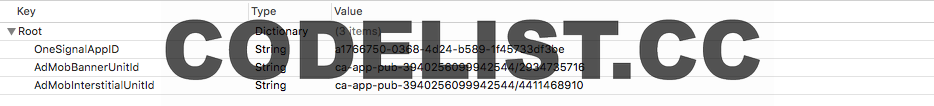

Country
Full iOS Template App
The Country is a full IOS template written in Swift language that will help you create a multi-functional app. App comes with an incredible user interface, with ability to change or modify it, and adopt different types creating completely different view. App offers easy navigation and table modification that suits everyones needs and complexities. Country app is a perfect example of how data should be fetched from the server and inserted in SQLite database. This is a demo app for everyone who is interested in creating more complexed app. Icon made by Freepik from www.flaticon.com
- created: 06/04/2016
- latest update: 06/04/2016
- by: Brommko LLC
- email: brommko@yahoo.com
Thank you for purchasing my app. If you have any questions that are beyond the scope of this help file, please feel free to email me. Thanks so much!
Introductions
This app is using EAIntroView, highly customizable drop-in solution for introduction views. More on EAIntroView.
Everything you need to do is to replace images with your own that are going to introduce your app content. Find current images in Xcode Assets folder and replace them. Example bellow:
AdMob
AdMob uses the Google Mobile Ads SDK. The Google Mobile Ads SDK helps app developers gain insights about their users, drive more in-app purchases, and maximize ad revenue. In order to do so, the default integration of the Mobile Ads SDK collects information such as device information, publisher-provided location information, and general in-app purchase information (such as, item purchase price and currency). Everything you need to do is to replace this test id's located in AppDelegate class with your own.
Simply find and edit "PushAndAds.plist” file in the project folder. Change AdMob Unit Id and you are finished. If you don't want AdMob in your app, simply remove key and string tags.
More on Firebase
Firebase Cloud Messaging
Firebase Cloud Messaging (FCM) is a cross-platform messaging solution that lets you reliably deliver messages at no cost. Using FCM, you can notify a client app that new email or other data is available to sync. You can send notification messages to drive user reengagement and retention. For use cases such as instant messaging, a message can transfer a payload of up to 4KB to a client app.
More on Firebase
- Copy in the "GoogleServices-Info.plist” to your project
- Update the app Bundle ID in XCode to match the Bundle ID of your APNs cert.
OneSignal
OneSignal is a high volume and reliable push notification system for mobile and web applications.
Simply find and edit "PushAndAds.plist” file in the project folder. Change OneSignal App ID and you are finished. If you don't want OneSignal in your app, simply remove key and string tag.
More on OneSignal
Database
In the world of software development, it doesn’t take long before you need to persist app data. In many cases, this comes in the form of data structures. But how do you store it effectively — and efficiently? Fortunately, some great minds have developed solutions for storing structured data in databases and writing language features to access that data. This app shows you how to work with the popular database platform SQLite, from within Swift. SQLite is available by default on iOS.
Our data access layer will consist of three layers. The bottom most, connection, layer will consist of one class named SQLiteDataStore which will contain the connection handle for our SQLite database. This class will implement the singleton pattern so all access to the database will go through one connection handle.
The next layer will be a data helper layer that will contain one class for each of our tables. These data helper classes will contain methods to create, insert, delete and query a specific table. We will want to create a protocol for the data helper classes to ensure that they contain a minimum set of functionality like creating the table.
The final layer is the model layer. This layer will contain tuples that model our database tables and will be used to write or retrieve data from the data store.
You’ll learn how to perform the following database operations:
- Create and connect to a database
- Create a table
- Insert a row
- Update a row
- Delete a row
- Find all
- Find by id
This is where all starts, image bellow is showing the first method called when app is executed.

You will notice that databaseMigration method is called. This method creates a new connection with SQLiteDataStore.sharedInstance.DB and checks the current PRAGMA version of your database and the versonsForUpgrade variable. If the versonsForUpgrade is higher, migrateVersion will be called.

SQLiteDataStore.sharedInstance.DB is opening the existing database or creating a new one, in our case database is named same as our 'Country' app.
If you have changes on database later when your app is in production, you will need to increase versonsForUpgrade number and create methods bellow where you will performe ALTER or any other changes on database. First database version is set in migrateVersion method where tables are created. This will be called just once when you run the app for the first time.
In our case, only one table is created called 'country'. In this table we will insert all countries fetched from server. If you need a good SQLite manager, I would suggest SQLiteManager
Now lets look at the model layer. Our model has an id, name, capital and region. Save method is trying to update the model using the CountryDataHelper class, if update is not successful, insert will be made. Delete method is also using the CountryDataHelper class. Method mapping is for mapping the server object, in our case, model name property is same as name received in json from server. When we want to sent our model in json format to the server, we will need toJSONString method. This method will map the model back to the same json format received from the server.
Now lets look at the data helper layer. This layer will be the bridge to our connection layer and will contain one data helper class per table in our database. We will begin by creating a data helper protocol that will define the set of methods that each data helper class needs to implement. The DataHelperProtocol protocol looks like this:
Notice that we only define one method to query our data stores. We do this because the methods to query each individual table could be different therefore the method(s) needed to query the tables could be different. We would need to evaluate the query methods needed for each table on a table-by-table basis. Now lets look at the CountryDataHelper class that will confirm to the DataHelperProtocol. This class will be used to read and write information to the Country table of the SQLite data store.
We start the CountryDataHelper class by setting the TABLE_NAME property. This property defines the name for the table within our database. Next we define the table property which is the SQLite table that contains our data. We use the table property to access the Country table with in our database. The next four properties (id, name, capital and region) define the name and type of each row in the table. Finally we implement each of the five methods defined in the DataHelperProtocol protocol plus few extra methods which will search the table by its unique identifier and similar methods.
If you need more methods and queries you can find them on SQLite.
API Helper
Our app is using Alamofire. Alamofire is an HTTP networking library written in Swift. First thing you will need to do is to set your own server url in APIHelper class:
Next you need to add all services of your server that you will be performing in the app, example:
In our examples below we will show you how to performe GET request on server using Alamofire and fetch all coutries from restcountries. If our model is mapped correctly and in our example it is, this method will convert json received from server to array of our Country models.
Also if you will need authorisation with your server, in our code you will find 3 more methods that are showing you how to configure authentication and perform register and login requests.